An Introduction to the Electronic Structure of Atoms
and Molecules
Dr. Richard F.W. Bader
Professor of Chemistry / McMaster University / Hamilton,
Ontario
|
Dipole Moments and Polar Bonds
Any chemical bond results from the accumulation of charge density
in the binding region to an extent sufficient to balance the forces of
repulsion. Ionic and covalent binding represent the two possible extremes
of reaching this state of electrostatic equilibrium and there is a complete
spectrum of bond densities lying between these two extremes. Since covalent
and ionic charge distributions exhibit radically different chemical and
physical properties, it is important, if we are to understand and predict
the bulk properties of matter, to know which of the two extremes of binding
a given molecule most closely approximates.
We can obtain an experimental measure of the extent to
which the charge density is unequally shared by the nuclei in a molecule.
The physical property which determines the asymmetry of a charge distribution
is called the dipole moment. To illustrate the definition of the dipole
moment we shall determine this property for the LiF molecule assuming that
one electron is transferred from Li to F and that the charge distributions
of the resulting ions are spherical.
The dipole moment is defined as the product of the
total amount of positive or negative charge and the distance between their
centroids The centroids of the positive and negative charges in a
molecule are determined in a manner similar to that used to determine the
centre of mass of a system.
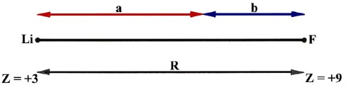
Fig.7-6. diagram for the calculation of the centroids
of positive and negative charge in LiF.
With reference to Fig. 7-6 the "centre of gravity"
of the positive charge in LiF is easily found from the following equations:
Eliminating b from these equations and solving for a we find
that
Thus all the positive charge in the LiF molecule can be considered to be
at a point one quarter of the bond length away from the fluorine nucleus.
Similarly the centroid of negative charge, remembering that one electron
has been transferred from Li to F, is found to lie at a point one sixth
of the bond length away from the F nucleus. The centroids of positive and
negative charge do not coincide, the negative centroid being closer to
the F nucleus than the positive centroid. While the molecule is electrically
neutral, there is a separation of charge within the molecule. Let us denote
the distance between the centroids of charge by l :
and since there are twelve electrons in LiF, the dipole moment denoted
by m is
Thus, not surprisingly, the dipole moment in this case is numerically equal
to one excess positive charge at the Li nucleus and one excess negative
charge at the F nucleus, or one pair of opposite charges separated by the
bond length.
We can easily calculate the value of the dipole moment.
The value of R for LiF is 1.53 ´
10-8 cm and the charge on the electron
is 4.80 ´ 10-10 esu.
Thus
where 1 debye = 1 ´ 10-18
esu cm. (The fundamental unit for dipole moments is called a debye in honour
of P. Debye who was responsible for formulating the theory and method of
measurement of this important physical quantity.) The experimental value
of m for
LiF is slightly smaller than the calculated value, being 6.28 debyes.
The reason for the discrepancy is easily traced to the assumption made
in the calculation that the charge distributions of the Li+
and F- ions are spherical. We have previously indicated that
the charge distributions of both the F- and Li+ ions
are polarized in a direction counter to the direction of transfer of the
electron in order to balance the forces on the nuclei. The centroid of
the ten negative charges on F is not at the F nucleus, but shifted slightly
towards the Li, and the centroid of the charge density on Li+
is correspondingly shifted slightly off the Li nucleus away from
the F. Thus the centroid of negative charge for the whole molecule is not
as close to the F nucleus as our simple calculation indicated and the dipole
moment is correspondingly less.
Obviously from this discussion the dipole moment of a molecule
with a covalent bond will be zero since the symmetry of the charge distribution
will dictate that the positive and negative charge centroids coincide.
Thus dipole moments can conceivably possess values which lie between the
covalent limit of zero and the ionic extreme which approaches neR
in value (n being the number of electrons transferred in the formation
of the ionic bond).
The series of diatomic molecules formed by the union of
a single hydrogen atom with each of the elements in the second row of the
periodic table exemplifies both the extreme and intermediate types of binding,
and hence of dipole moments. Table 7-4 lists
the dipole moments and the values of eR for the ionic extreme (assuming
spherical ions) for the second-row diatomic hydride molecules.
Table 7-4.
Dipole Moments and Bond Lengths of Second-row Hydrides
|
AH
|
m*(debyes)
|
eR(debyes)
|
R(Å)
|
|
LiH
|
-6.002
|
-7.661
|
1.595
|
|
BeH
|
-0.282
|
-6.450
|
1.343
|
|
BH
|
1.733
|
5.936
|
1.236
|
|
CH
|
1.570
|
5.398
|
1.124
|
|
NH
|
1.627
|
4.985
|
1.038
|
|
OH
|
1.780
|
4.661
|
0.9705
|
|
FH
|
1.942
|
4.405
|
0.9171
|
*The negative or positive signs for m
imply that H is the negative or positive end of the dipole respectively.
All of these molecules exist as stable, independent species in the gas
phase at low pressures and may be studied by spectroscopic methods or by
molecular beam techniques. Only LiH and HF, however, are stable under normal
conditions; LiH is a solid and HF a gas at room temperature. The remaining
diatomic hydrides are very reactive since they are all capable of forming
one or more additional bonds.
The variation of the dipole moment in this series of molecules
provides a measure of the relative abilities of H and of
each of the second-row elements to attract electrons. For example, the
dipole moment for LiH illustrates that electron density is transferred
from Li to H in the formation of this molecule. In HF, on the other hand,
charge density is transferred from H to F. With the exception of BH, there
is a steady increase in m from -6.0 debyes for
LiH to +1.9 debyes for HF. Only LiH approaches the ionic limit of Li+H-.
BeH appears to possess a close to equal sharing of the valence electrons.
The remaining molecules, while exhibiting some degree of charge removal
from H, are all far removed from the ionic extreme. They represent cases
of molecular binding which lie between the two extremes, ionic and covalent.
They are referred to as polar molecules.
We can best illustrate the variation in the chemical binding
in this series of molecules by considering the properties of the molecular
charge and bond density distributions (Fig. 7-7
and 7-8). In LiH almost all of the molecular charge
density is centred on the two nuclei in nearly spherical distributions.
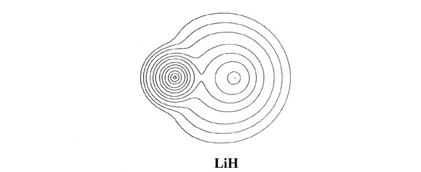
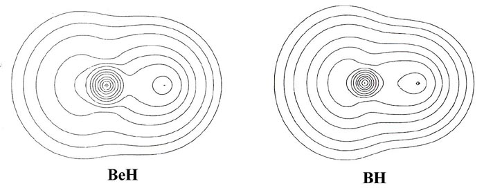
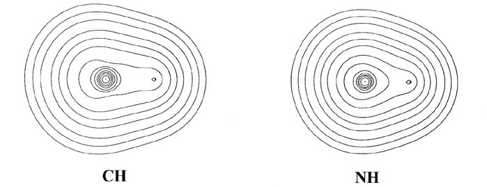
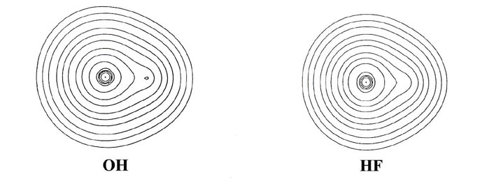
Fig. 7-7. Contour maps of the molecular charge
distrubution of the diatomic hydride molecules LiH to HF. The proton is
the nucleus on the right-hand side in each case. Click
here for contour values.
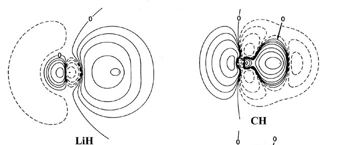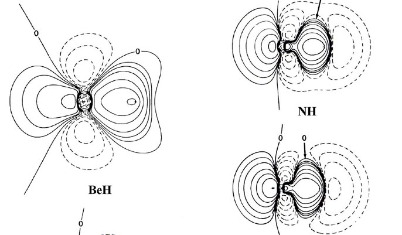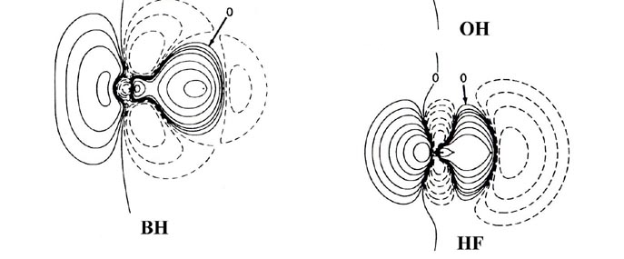
Fig. 7-8. Bond density maps for the diatiomic
hydride molecules LiH to HF. The proton is on the right-hand side in each
case. Click here
for contour values.
The nonbonded charge and radius for lithium, 1.09 e- and
1.7 ao respectively, are characteristic of the 1s2
inner shell distribution of Li+. Thus the molecular charge distribution
for LiH indicates that the single valence electron of lithium is transferred
to hydrogen and that the bond is ionic. (Recall that initially the Li atom
is much larger than an H atom. The density map for LiH should
be compared to that given previously for LiF, Fig.
7-1.)
In BeH, the valence density has the appearance of being
equally shared by the two nuclei. From BH through to HF a decreasing amount
of density is centred on the proton to the extent that the charge distribution
of HF could be approximately described as an F- ion distribution
polarized by an imbedded proton.
The increase of the effective nuclear charge across a row
of the periodic table is reflected not only in the amount of charge transferred
to or from the hydrogen, but also in the relative sizes of the molecules.
In BeH the density is diffuse and the molecule is correspondingly large.
In HF the density is more compact and the molecule is the smallest in the
series. The decrease in the size of the molecule from BH to HF parallels
the decrease in the size of the atoms B to F. The intermediate size of
LiH is a consequence of the one and only valence electron of lithium being
transferred to hydrogen, and thus the size of LiH is a reflection of the
size of the Li+ ion and not of the Li atom.
In general terms, the bond density maps provide a
striking confirmation of the transfer of charge predicted by the relative
electron affinities or by the relative effective nuclear charges of hydrogen
and the second-row elements Li ® F. We may
again employ the position of the charge increase in the bond density map
to characterize the type of binding present in the molecule. The map for
LiH exhibits the same characteristics as does the one for LiF (Fig.
7-2), the contours in the region of the Li nucleus being remarkably
similar in the two cases. The valence density is clearly localized about
the proton just as it is about the fluorine nucleus in LiF. The 1s
core density remaining on lithium is clearly polarized away from the proton,
and the density increase localized on the proton is polarized towards the
lithium as required in ionic binding.
The one principal difference between the LiH and LiF bond
density maps concerns the shape of the contours representing the density
increase on the proton and fluorine nucleus. In LiF the contours on fluorine
are similar in shape to those obtained for a 2ps
orbital density. In LiH the contours on the proton are nearly spherical.
In terms of a simple orbital model we imagine the 2s electron of
Li to be transferred to the 1s orbital of hydrogen in LiH and to
the 2ps orbital of fluorine in LiF. The
spherical and double-lobed appearance of the density increases found for
hydrogen and fluorine respectively show these orbital models of the binding
to be reasonable ones.
From BeH through the rest of the series, the bond density
maps show an increase in the amount of charge removed from the proton and
transferred to the region of the other nucleus. This is evident from the
increase in the number and diameter of the dashed contours in the nonbonded
region of the proton. The pattern of charge increase and charge removal
in the regions of the Be, B, C, N, O and F nuclei is similar to that found
for these nuclei in their homonuclear diatomic molecules, and is characteristic
of the participation of a ps orbital
in the formation of the bond. The polarization of the density in the region
of the hydrogen is of the simple dipolar type characteristic of a dominant
s
orbital contribution. As previously discussed, the double-lobed appearance
of the density increase in the region of fluorine in the bond density map
for LiF can be viewed as characteristic of the ionic case when a 2ps
orbital vacancy is filled in forming the bond. This limiting pattern is
most closely approached in the hydride series by HF, the molecule exhibiting
the largest degree of charge transfer from hydrogen. HF, of all the hydrides,
is most likely to approach the limiting ionic extreme of H+F-.
However, the charge increase in the region of fluorine in HF is not as
symmetrical as that found for F in the LiF molecule. The proton in HF,
unlike the Li+ ion in LiF, is imbedded in one lobe of the density
increase on F and distorts it. Thus, unlike the ionic extreme of LiF, the
charge increase on F in HF is shared by both nuclei in the molecule.
Another important difference between the charge distributions
of HF and LiF concerns the polarizations of the charge density in the immediate
vicinities of the nuclei. In LiF (or LiH) the localized charge distributions
are both polarized in a direction opposite to the direction
of charge transfer Li ® F (or Li ®
H). These polarizations are a consequence of the extreme charge transfer
from lithium to fluorine, a transfer resulting in a force of attraction
on the lithium nucleus and one of repulsion on the fluorine nucleus. In
HF the charge density in the regions of the proton and the fluorine nucleus
is polarized in the same direction as the direction of charge
transfer from H ® F. Thus the amount of
charge transferred to the vicinity of the fluorine in HF is not, unlike
the situation in LiF, sufficient to screen the nuclear charge of fluorine
and hence exert a net attractive force on the proton. Instead, the fluorine
nucleus and its associated charge density exert a net repulsive force on
the proton, one which is balanced by the inwards polarization of the charge
density in the region of the proton.
The polarization of the charge density on the proton adds
to and is contiguous with the charge increase in the binding region. Thus
in HF and in the molecules BeH to OH for which the charge transfer is less
extreme, the nuclei are bound by a shared density increase and the binding
is covalent. From BeH through the series of molecules the sharing of the
charge increase in the binding region becomes increasingly unequal and
favours the heavy nucleus over the proton. The latter molecules in the
series, NH, OH and HF, provide examples of polar binding which are intermediate
between the extremes of perfect covalent and ionic binding as exhibited
by the homo nuclear diatomics and LiF respectively.
In general, chemical bonds between identical atoms or between
atoms from the same family in the periodic table will exhibit equal or
close to equal sharing of the bond density and be covalent in character.
Compounds formed by the union of elements in columns I or II with elements
in columns VIA or VIIA will be ionic, as exemplified by LiF or BeO. We
find a continuous change from covalent to ionic binding as the atoms joined
by a chemical bond come from columns in the periodic table which are progressively
further removed from one another. This is illustrated by the variation
in the molecular charge distributions through the series of molecules shown
in Fig. 7-9.
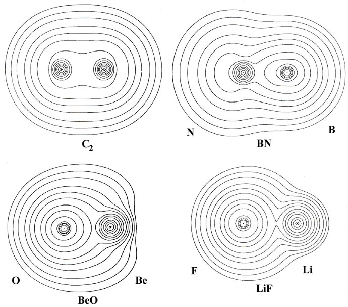
Fig. 7-9. Molecular charge distributions
for the 12-electron isoelectronic series C2,
BN, BeO and LiF. Click here for contour
values.
This series of molecules is formed (in an imaginary process) by the
successive transfer of one nuclear charge from the nucleus on the left
to the nucleus on the right, starting with the central symmetrical molecule
C2.
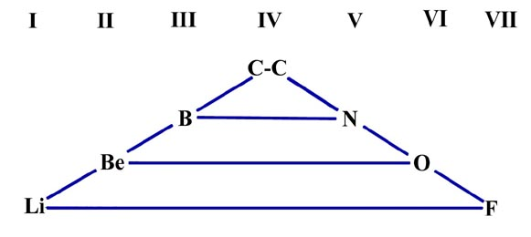
The molecules are said to form an isoelectronic series since they all
contain the same number of electrons, twelve. The molecular charge distributions
in this series illustrate how the charge distribution and binding for a
constant number of electrons changes as the nuclear potential field
in which the electrons move is made increasingly unsymmetrical.
In C2 the nuclear charges
are, of course, equal and the charge distribution is symmetrically shared
by both nuclei in the manner characteristic of covalent binding. In the
remaining molecules the valence charge density is increasingly localized
in the region of the left-hand nucleus. This is particularly evident in
the bond density maps and their profiles (Fig. 7-10)
which show the increasing extent to which charge density is transferred
from the region of the nucleus on the right (B, Be, Li) to its partner
on the left (N, 0, F).
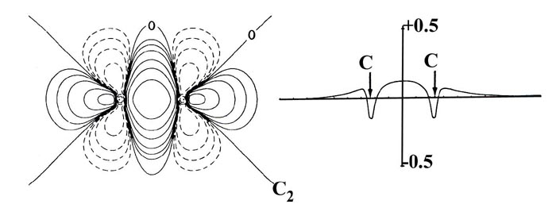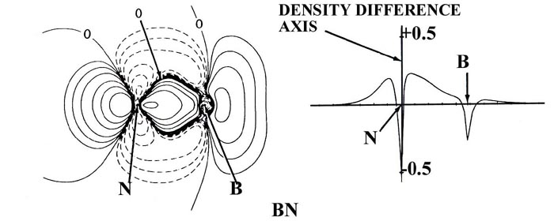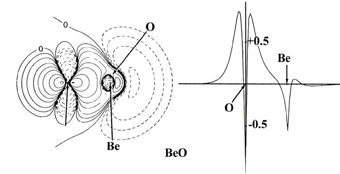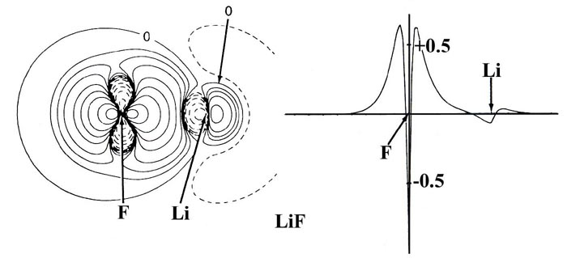
Fig. 7-10. Bond density maps and profiles
along the internuclear axes for the 12-electron sequence of molecules C2,
BN, BeO and LiF. Click here for contour
values.
The charge distribution of BN (with nuclear charges of five for
boron and seven for nitrogen) is similar to that for C2
in that charge is accumulated in the nonbonded regions of both nuclei as
well as in the region between the nuclei. However, the buildup of charge
behind the boron nucleus is smaller than that behind the nitrogen nucleus
and the charge density shared between the nuclei is heavily shifted towards
the nitrogen nucleus. Thus the binding in BN is predominantly covalent,
but the bond density is polarized towards the nitrogen.
The charge transfer in BeO and LiF is much more extreme
and the bond density maps show a considerable loss of charge from the nonbonded
regions of both the Be and Li nuclei. Notice that except for contours of
very low value the charge density in BeO, as in LiF, is localized in nearly
spherical distributions on the nuclei, distributions which are characteristic
of Be+2 and O-2 ions. A count of the number of electronic
charges contamed within the spherical or nearly spherical contours centred
on the nuclei in BeO and LiF indicates that the charge distributions correspond
to the formulae Be+1.5O-1.5 and Li+1F-1.
That is, the binding is ionic and corresponds to the transfer of approximately
one charge from Li to F and of one and one half charges from Be to O. Thus
while the binding in LiF is close to the simple orbital model of Li+(1s2)F-(1s22s22p6)
as noted before, the binding in BeO falls somewhat short of the description
Be+2(1s2)O-2(1s22s22p6).
Notice that the density contours on oxygen in BeO are more distorted towards
the Be than the contours on F are towards Li in LiF. This illustrates that
the oxygen anion is more polarizable than is the fluoride anion.
The radius of the charge distribution on the nonbonded
side of the Be nucleus as measured along the bond axis is identical to
that found for an isolated Be+2 ion. (Recall that the radius
of an atomic or orbital density decreases as the nuclear charge increases.
Thus the Li+1 ion is larger than the Be+2 ion
as indicated in Fig. 7-9.) However, the radius
of the Be charge density perpendicular to the bond axis is much greater
than that for a Be+2 ion. This shows, as does the actual
electron count given above, that the two valence electrons of boron are
not completely transferred to oxygen in the formation of the BeO molecule.
Hydrogen is an exception to the above set of generalizations
regarding an element's position in the periodic table and the ionic-covalent
nature of the bond it forms with other elements. It does not behave in
a manner typical of family IA. The bond formed between hydrogen and another
member of group IA, as exemplified by LiH, is ionic and not covalent. Here
hydrogen accepts a single electron to fill the vacancy in its 1s
shell and thus resembles the members of family VIIA, the halogens. The
bond in HF, however, is more polar than would be expected for the union
of two adjacent members of the same family, and hydrogen is therefore
not a typical member of family VIIA. This intermediate behaviour
for H is understandable in that the values of its ionization potential
and electron affinity are considerably greater than those observed for
the alkali metals (IA) but are considerably less than those found for the
halogens (VIIA).